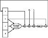

Applied Cryptography, Second Edition: Protocols, Algorthms, and Source Code in C (cloth)
(Publisher: John Wiley & Sons, Inc.)
Author(s): Bruce Schneier
ISBN: 0471128457
Publication Date: 01/01/96
If Mj represents the j th sub-block of the message (from 0 to 15), and <<<s represents a left circular shift of s bits, the four operations are:
- FF(a,b,c,d,Mj,s,ti) denotes a = b + ((a + F(b,c,d ) + Mj + ti) <<< s)
- GG(a,b,c,d,Mj,s,ti) denotes a = b + ((a + G(b,c,d ) + Mj + ti) <<< s)
- HH(a,b,c,d,Mj,s,ti) denotes a = b + ((a + H(b,c,d) + Mj + ti) <<< s)
- II(a,b,c,d,Mj,s,ti) denotes a = b + ((a + I(b,c,d ) + Mj + ti) <<< s)

Figure 18.6 One MD5 operation.
The four rounds (64 steps) look like:
- Round 1:
- FF (a, b, c, d, M0, 7, 0xd76aa478)
- FF (d, a, b, c, M1, 12, 0xe8c7b756)
- FF (c, d, a, b, M2, 17, 0x242070db)
- FF (b, c, d, a, M3, 22, 0xc1bdceee)
- FF (a, b, c, d, M4, 7, 0xf57c0faf)
- FF (d, a, b, c, M5, 12, 0x4787c62a)
- FF (c, d, a, b, M6, 17, 0xa8304613)
- FF (b, c, d, a, M7, 22, 0xfd469501)
- FF (a, b, c, d, M8, 7, 0x698098d8)
- FF (d, a, b, c, M9, 12, 0x8b44f7af)
- FF (c, d, a, b, M10, 17, 0xffff5bb1)
- FF (b, c, d, a, M11, 22, 0x895cd7be)
- FF (a, b, c, d, M12, 7, 0x6b901122)
- FF (d, a, b, c, M13, 12, 0xfd987193)
- FF (c, d, a, b, M14, 17, 0xa679438e)
- FF (b, c, d, a, M15, 22, 0x49b40821)
- Round 2:
- GG (a, b, c, d, M1, 5, 0xf61e2562)
- GG (d, a, b, c, M6, 9, 0xc040b340)
- GG (c, d, a, b, M11, 14, 0x265e5a51)
- GG (b, c, d, a, M0, 20, 0xe9b6c7aa)
- GG (a, b, c, d, M5, 5, 0xd62f105d)
- GG (d, a, b, c, M10, 9, 0x02441453)
- GG (c, d, a, b, M15, 14, 0xd8a1e681)
- GG (b, c, d, a, M4, 20, 0xe7d3fbc8)
- GG (a, b, c, d, M9, 5, 0x21e1cde6)
- GG (d, a, b, c, M14, 9, 0xc33707d6)
- GG (c, d, a, b, M3, 14, 0xf4d50d87)
- GG (b, c, d, a, M8, 20, 0x455a14ed)
- GG (a, b, c, d, M13, 5, 0xa9e3e905)
- GG (d, a, b, c, M2, 9, 0xfcefa3f8)
- GG (c, d, a, b, M7, 14, 0x676f02d9)
- GG (b, c, d, a, M12, 20, 0x8d2a4c8a)
- Round 3:
- HH (a, b, c, d, M5, 4, 0xfffa3942)
- HH (d, a, b, c, M8, 11, 0x8771f681)
- HH (c, d, a, b, M11, 16, 0x6d9d6122)
- HH (b, c, d, a, M14, 23, 0xfde5380c)
- HH (a, b, c, d, M1, 4, 0xa4beea44)
- HH (d, a, b, c, M4, 11, 0x4bdecfa9)
- HH (c, d, a, b, M7, 16, 0xf6bb4b60)
- HH (b, c, d, a, M10, 23, 0xbebfbc70)
- HH (a, b, c, d, M13, 4, 0x289b7ec6)
- HH (d, a, b, c, M0, 11, 0xeaa127fa)
- HH (c, d, a, b, M3, 16, 0xd4ef3085)
- HH (b, c, d, a, M6, 23, 0x04881d05)
- HH (a, b, c, d, M9, 4, 0xd9d4d039)
- HH (d, a, b, c, M12, 11, 0xe6db99e5)
- HH (c, d, a, b, M15, 16, 0x1fa27cf8)
- HH (b, c, d, a, M2, 23, 0xc4ac5665)
- Round 4:
- II (a, b, c, d, M0, 6, 0xf4292244)
- II (d, a, b, c, M7, 10, 0x432aff97)
- II (c, d, a, b, M14, 15, 0xab9423a7)
- II (b, c, d, a, M5, 21, 0xfc93a039)
- II (a, b, c, d, M12, 6, 0x655b59c3)
- II (d, a, b, c, M3, 10, 0x8f0ccc92)
- II (c, d, a, b, M10, 15, 0xffeff47d)
- II (b, c, d, a, M1, 21, 0x85845dd1)
- II (a, b, c, d, M8, 6, 0x6fa87e4f)
- II (d, a, b, c, M15, 10, 0xfe2ce6e0)
- II (c, d, a, b, M6, 15, 0xa3014314)
- II (b, c, d, a, M13, 21, 0x4e0811a1)
- II (a, b, c, d, M4, 6, 0xf7537e82)
- II (d, a, b, c, M11, 10, 0xbd3af235)
- II (c, d, a, b, M2, 15, 0x2ad7d2bb)
- II (b, c, d, a, M9, 21, 0xeb86d391)
Those constants, ti, were chosen as follows:
In step i, ti is the integer part of 232*abs(sin(i)), where i is in radians.
After all of this, a, b, c, and d are added to A, B, C, D, respectively, and the algorithm continues with the next block of data. The final output is the concatenation of A, B, C, and D.
Security of MD5
Ron Rivest outlined the improvements of MD5 over MD4 [1322]:
- 1. A fourth round has been added.
- 2. Each step now has a unique additive constant.
- 3. The function G in round 2 was changed from ((X⊥ Y ) ⊦ (X⊥ Z ) ⊦ (Y⊥ Z )) to ((X⊥ Z ) ⊦ (Y⊥ ¬ Z )) to make G less symmetric.
- 4. Each step now adds in the result of the previous step. This promotes a faster avalanche effect.
- 5. The order in which message sub-blocks are accessed in rounds 2 and 3 is changed, to make these patterns less alike.
- 6. The left circular shift amounts in each round have been approximately optimized, to yield a faster avalanche effect. The four shifts used in each round are different from the ones used in other rounds.
Tom Berson attempted to use differential cryptanalysis against a single round of MD5 [144], but his attack is ineffective against all four rounds. A more successful attack by den Boer and Bosselaers produces collisions using the compression function in MD5 [203, 1331, 1336]. This does not lend itself to attacks against MD5 in practical applications, and it does not affect the use of MD5 in Luby-Rackoff-like encryption algorithms (see Section 14.11). It does mean that one of the basic design principles of MD5—to design a collision-resistant compression function—has been violated. Although it is true that “there seems to be a weakness in the compression function, but it has no practical impact on the security of the hash function” [1336], I am wary of using MD5.
18.6 MD2
MD2 is another 128-bit one-way hash function designed by Ron Rivest [801, 1335]. It, along with MD5, is used in the PEM protocols (see Section 24.10). The security of MD2 is dependent on a random permutation of bytes. This permutation is fixed, and depends on the digits of π. S0, S1, S2,..., S255 is the permutation. To hash a message M:
- (1) Pad the message with i bytes of value i so that the resulting message is a multiple of 16 bytes long.
- (2) Append a 16-byte checksum to the message.
- (3) Initialize a 48-byte block: X0, X1, X2,..., X47. Set the first 16 bytes of X to be 0, the second 16 bytes of X to be the first 16 bytes of the message, and the third 16 bytes of X to be the XOR of the first 16 bytes of X and the second 16 bytes of X.
- (4) This is the compression function:
- t = 0
- For j = 0 to 17
- For k = 0 to 47
- t = Xk XOR St
- Xk = t
- t = (t + j ) mod 256
- (5) Set the second 16 bytes of X to be the second 16 bytes of the message, and the third 16 bytes of X to be the XOR of the first 16 bytes of X and the second 16 bytes of X. Do step (4). Repeat steps (5) and (4) with every 16 bytes of the message, in turn.
- (6) The output is the first 16 bytes of X.
Although no weaknesses in MD2 have been found (see [1262]), it is slower than most other suggested hash functions.
[an error occurred while processing this directive]
){kind=link}
){kind=link}